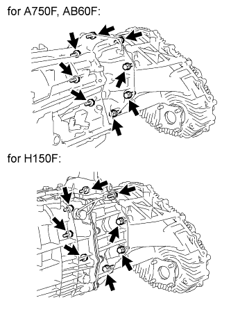

TRANSFER ASSEMBLY > REMOVAL |
| 1. DRAIN TRANSFER OIL |
 |
except 1GR-FE:
Remove the 2 bolts and transfer dynamic damper.
 |
Remove the 4 bolts and transfer heat insulator.
 |
Remove the 7 bolts and lower transfer case protector.
 |
Remove the filler plug and gasket.
 |
Remove the drain plug and gasket, and drain the transfer oil.
| 2. REMOVE AUTOMATIC TRANSMISSION WITH TRANSFER ASSEMBLY (for A750F) |
for 1GR-FE:
Remove the automatic transmission with transfer assembly (Click here).
for 2UZ-FE:
Remove the automatic transmission with transfer assembly (Click here).
| 3. REMOVE AUTOMATIC TRANSMISSION WITH TRANSFER ASSEMBLY (for AB60F) |
Remove the automatic transmission with transfer assembly (Click here).
| 4. REMOVE MANUAL TRANSMISSION WITH TRANSFER ASSEMBLY (for H150F) |
Remove the manual transmission with transfer assembly (Click here).
| 5. REMOVE TRANSFER ASSEMBLY |
 |
Remove the 8 transfer adaptor rear mounting bolts.
Pull the transfer straight up and remove it from the transmission.